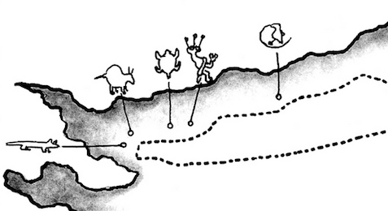
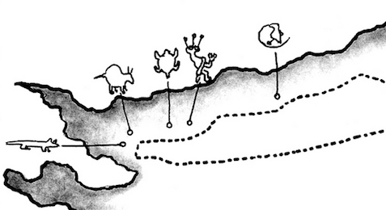

Hike New Mexico
w/ Tom & Ken
Rinconada Canyon Trail


 

- Dec 20, 2015: Rebuilding after the flood of 2013
- Jun 30, 2005: Odd looking character
- Dec 20, 2015: Well-fed beasts for harvest?
- Jun 30, 2005: Another other-worldly character
- Jun 30, 2005: Some petroglyphs are more discreetly placed
- Jun 30, 2005: The snake caught some prey
- Jun 30, 2005: Four-legger with tennis racket?
- https://www.flickr.com/photos/139088815@N08/27139949314/in/album-72157669380888432
- https://www.flickr.com/photos/139088815@N08/27651780812/in/album-72157669380888432
- https://www.flickr.com/photos/139088815@N08/27752363535/in/album-72157669380888432
- https://www.flickr.com/photos/139088815@N08/27718055436/in/album-72157669380888432
- https://www.flickr.com/photos/139088815@N08/27677715171/in/album-72157669380888432
- https://www.flickr.com/photos/139088815@N08/27677699551/in/album-72157669380888432
- https://www.flickr.com/photos/139088815@N08/27718016546/in/album-72157669380888432
Rinconada Canyon is just south of the Visitor Center of the Petroglyphs National Monument. It is probably the longest with fewer specimens to view than the others (in terms of density, or number of petroglyphs per unit distance). Another issue for that site is that it was flooded out in 2013 and the trail is still under re-construction. The NPS maintains site for Rinconada with useful information. The canyon does exhibit some remnants of the invasion of the Spanish into pueblo territories.